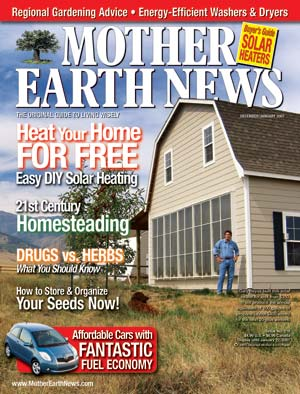
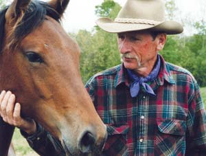

Dear Mother: February/March 2007
Letters from our readers
February/March 2007
February/March 2007 Issue #220
30 Years of Free Solar Heat
In Defense of Al Gore
Reflections on Hobbit-house Homesteading
Anti-antibacterial Soaps
A Wonderful Washer/Dryer
Wild About Worms
Dedicated Watcher of Wildlife
Free-range Eggs: Research Overdue
Organic Agriculture Film
Corn is Hot
Solar Simply Sensible
Companions Beat Beetles
Concerned About Consumerism
Just Too Many People
30 Years of Free Solar Heat
My late grandmother was fond of saying, “There’s nothing new under the sun except the people.” This came to mind when I read “Build a Simple Solar Heater” (December/January 2007). My grandfather had a nice little beach house on the coast of New Jersey, where the family spent time each summer. We constantly clogged the bathtub drain with sand when we came back from the beach, so my grandfather built an outside shower, but the water was cold.
Then he built a simple wooden box that lay on the ground behind the shower, its inside painted black, with copper pipe running back and forth through it, covered with a couple of old storm windows. We could then mix in hot water from his solar heater and take a warm shower to rinse off the sand.
Thirty-some years later, when my son was in high school and wanted a larger bedroom, we finished the basement. It was cool in the winter as the carpet was on top of a cement floor. There was an energy shortage in the ’70s, Uncle Sam was offering a tax cut for alternative heating sources, and I remembered my grandfather’s water heater. So I designed and built my own solar heater, similar to the one in your article.
I used a 2-by-8 frame with a plywood back and painted it all white inside. To collect heat, I used lengths of dark brown aluminum downspout. I built what looked like a ladder, with two long vertical rails and as many “rungs” as would fit. I cut holes in the rails for the rungs and cut the rung ends at parallel 45 degree angles. I stacked the rungs with alternating angles, so that each one opened into the one above it. Air passing from bottom to top had to go through all the rungs, a circuitous route of about 40 feet. I covered the frame with a piece of polycarbonate. It looked somewhat like frosted glass, but sunlight passed right through.
I mounted it on the south end of the house and installed an inline fan with a thermostat that turned the fan on when it got hot, off when it cooled down. It worked well, kept my son’s room nice and warm, and gave me a tax credit that year for the few dollars it cost. It lowered my overall heat bill, because it heated the basement, which heated the floor above, and the gas heater did not run as often.
About two years ago I went past that house and noticed that the heater was still there. I figure it must still be working or the owners would have removed it. And by the way, my son is now the general manager for Mother Earth News.
W.G. Uhler
Topeka, Kansas
In Defense of Al Gore
Does the letter writer who wants “piece of work” Al Gore to “fold up his tent and go quietly into the night” (“Dear Mother,” December/January 2007) think that the inconvenient truth of global warming also will then just go away?
Now is not the time to stick our heads in the sand. I am so thankful that Mother Earth News continually prints articles about clean, renewable energy and energy independence. I don’t care whether the articles feature celebrities or regular folks - the more people who join the movement to wean ourselves from oil and other fossil fuels, the closer we are to solving some of the world’s worst problems. Seeing the ponderous pace at which our elected officials are moving toward that goal, I realize that it really is we the people who must “be the change we wish to see in the world.”
Mary Bellomo
Wilmington, Delaware
REFLECTIONS ON HOBBIT-HOUSE HOMESTEADING
Story Strikes a “Cord”
Just a note of thanks to Harvey Baumgartner for “Grandpa’s Hobbit House” (October/November 2006). His reflections on the hidden blessings in doing chores made me laugh. After getting my kids on the school bus, I’d head back to do my daily wood chopping, and soon my elderly neighbor “gentleman” would yell over that he loved nothing better than hearing a woman singing in rhythm to an axe and a maul! When he took up playing the clarinet, he’d join me - he practiced, I chopped and sang. Approximately seven cords (and way too many chords to count) each winter gave us lots of time to become good buddies. Even though he’s moved on to a senior living apartment, we keep in touch, and I mail him zucchini relish each fall. Thanks for the memories.
Laurie Peltier
Lakebay, Washington
A Great Example
The article by Harvey Baumgartner so impressed me with his philosophy of life that I want to congratulate him. His intentional way of living is a great example for all of us who struggle to live simply in our increasingly materialistic world. Thank you, Harvey!
LaVon Rader
Green Bay, Wisconsin
ANTI-ANTIBACTERIAL SOAPS
Increased Risk of Infection
Thank you, thank you for publishing the article on antibacterial soap (“Green Gazette,” October/November 2006). I have been singing this song for 25 years, but from a different slant. As a registered nurse who specializes in skin issues and wounds, I tell my patients that there are both good and bad bacteria on their skin, and they keep each other in check. If they use an antibacterial soap all over the body, all bacteria could be killed. Then, when a cut or break in the skin occurs, they might be more likely to develop a skin infection.
Linda Hoover
Medford, Oregon
Spreading the Word
Finally, validation - I’ve been a long-time believer that these types of soap aren’t helpful and are potentially harmful. Thank you for writing the article! I’ve shared it with several friends and family that I know use this stuff.
Sara Pritt
Eugene, Oregon
A Wonderful Washer/Dryer
To your article, “Look into Energy-efficient Washers and Dryers” (December/January 2007), I’d like to add the Thor Softline. It is a combination of the washer and dryer, not a stacking model. I have used one for more than a year and a half. It is wonderful, because it brings a different rhythm to the user’s life. The Softline is smaller than a conventional-sized washer or dryer and requires no outside venting for the dryer - it condenses the moisture and sends it out the same drain the wash water uses (along with the lint). The machine runs on 110 volts. The washer uses half the amount of water as a regular washer and only a tiny amount of detergent. I have washed a 3-by-5-foot cotton rug and packed the machine full of towels and queen-size bedsheets. In the dryer mode, you should dry only a half load to allow space for everything to tumble and be unwrinkled. This is a terrific washer/dryer!
Devi Moore
Knoxville, Tennessee
Wild About Worms
I was especially gratified to see you cover vermicomposting, a subject near and dear to my heart, in the sidebar of your fine article “Compost Made Easy” (October/November 2006).
I steadfastly believe that composting is one of the most important constructive things human beings can do to heal this Earth. The article was very smart and helpful, demystifying the process of composting in a very clear way. I’m also convinced that composting with worms is the best process.
My experience this past year has been that bedding worms in sawdust and fine wood shavings gives better results than shredded newspaper. Also, a hardware cloth screen as a divider in your worm bin allows you to add bedding on one side until it is full, then add on the other side. The worms finish the compost on the first side and then move over to the second, simplifying the harvest - you just empty out the first side and repeat the cycle. You’ll harvest some worms with the finished vermicompost, but they breed so quickly and prolifically under these conditions - it’s a bonus, not a problem.
Rex Morris
Vashon, Washington
Dedicated Watcher of Wildlife
I always enjoy reading Mother Earth News, but “Secrets of Watching Wildlife” and “Get to Know Nature” (October/November 2006) struck a particular chord. For some puzzling reason, many animals seem to consider me one of their own - especially dogs and birds. At one time, more than 20 wild birds had free access into my house, and they would sit on an inner door watching me go about my business!
In “Get to Know Nature,” author Jena Ball tells readers to choose a special place. Many years ago, in Huntingdon, United Kingdom, I found just such a place - a disused railway cutting - where I spent every lunch hour in total bliss. Utter peace, only seven minutes’ walk from the town center, and my only companions were birds, bees, butterflies and rabbits. This went on for two years, then the official vandals (planners and the local council) stepped in and built a noisy four-lane highway right along it!
Not until I became a permanent resident of the United States did I discover anything to match that place. Now, the resident deer eat all my vegetables, and just a few weeks ago, I saw a hummingbird at some flowers! I hope the United States - with help from your magazine and its readers - will manage to escape the planning blotches that have so despoiled the United Kingdom over the past 30 years.
Raymond Gibson
Salem, Oregon
Free-range Eggs: Research Overdue
The time has come. Food researchers in government and academia must investigate the nutritional differences between eggs from factory-raised hens and hens raised on pasture.
Why? Two small studies show that eggs from pastured hens are nutritionally superior. Not only did eggs from pastured hens have far more omega-3s, beta carotene, and vitamin E, they also had less cholesterol - the fat that is linked with heart disease.
For decades, the egg industry has struggled to produce a low-cholesterol egg. To achieve this end, they’ve fed confined hens a long list of chemicals, including cupric sulfate pentahydrate, cholesterol 0-actyltransferase, lovastatin, colestipol, and di-(2-ethylhexyl) phthalate. No luck. Now, it appears that adding bugs and grass to a hen’s diet - the natural solution - is the answer.
The first farmer-initiated study was conducted in 1999. Grass farmer Barbara Gorski received a small Sustainable Agriculture Research and Education grant to analyze the eggs from three pasture-based farms. Compared to ordinary eggs, the eggs from the pastured chickens had 34 percent less cholesterol - 160 mg versus the usual 214 mg! Mother Earth News reported on a similar study of its own in which pastured eggs had 49 percent less cholesterol than store eggs! In both studies, independent laboratories conducted the nutritional analysis. Not surprisingly, these studies have attracted little attention. They were too small and too loosely controlled to be taken seriously by the powers that be. But the findings are so provocative that some researcher needs to take them to the next level. Who will rise to the challenge?
Jo Robinson
Vashon Island, Washington
The Mother Earth News Egg Testing Project will announce another round of results next summer, and we invite anyone raising hens on pasture to have their eggs tested and send the results to us. OurChicken and Egg Page lists recommended labs and prices for the testing. - Mother
Organic Agriculture Film
I recommend to your readers a documentary film called “My Father’s Garden.” It’s a 1995 Miranda production featuring two farmers: the filmmaker’s father, a Florida orange grower who embraced the chemical sprays of the 1950s, and Fred Kirschenmann, who tells the story of converting his 3,000 acre North Dakota farm to organic. Kirschenmann talks about the deep problems in conventional farming, but he also shows there is a way out. The film also gives a history of the Dust Bowl, which helped me understand how we might have gotten into this predicament in the first place. This touching, beautifully done film is a powerful way to help consumers and farmers see the importance of organic, sustainable agriculture.
Marian Hollinger
Slippery Rock, Pennsylvania
To rent or purchase this award-winning film, contactBullfrog Films, (800) 543-3764. - Mother
Corn is Hot
Anyone looking for a cheap, efficient way to supplement home heat this winter should look into a corn stove or furnace. I bought a 40,000-Btu freestanding corn stove made by St. Croix and couldn’t have made a better buy. With propane at an all-time high, my stove paid for itself in just over one winter. I’ve used 150 bushels of corn a year the past two years, costing about $300. In previous years, I paid nearly $1,400 for 1,100 gallons of propane. My stove has been trouble-free; I only need to clean it every month or two, depending on how clean my corn fuel is. I recommend this to anyone who wants to save money on heating. You can buy corn in bulk from farmers or your local grain elevator. My stove has saved me a lot of money, and it is also nice to watch that flame on those cold winter days.
Josh Dagel
Sibley, Iowa
For more information on corn stoves, see "Pellet Prospects: Will Supply Meet Demand?"- Mother
Solar Simply Sensible
I am a die-hard conservative Republican, as I guess more than a few of your readers are. I am not particularly convinced that humans are causing global warming. Scientists tell us that the Earth went through a similar cycle about 10,000 years ago. I wonder how many cars and CFCs, etc., existed then. It’s happening for sure, but I think it’s a cycle and there’s little, if anything, we can do about it.
But for the life of me, with solar power being so easy to install and so cheap (some systems really aren’t expensive - they would pay for themselves in my area in four years), I don’t know why every state doesn’t mandate that every new home being built must come with a solar-electric system. It’s a no-brainer. I am going to send this suggestion to every member of our State Assembly. I mean, this is Texas, where the sun shines almost every day. State government officials tell us we are facing a power shortage in the coming years. The answer is on top of our roofs, a free gift from God. To not take advantage of it is stupid.
Carl Hames
Little Elm, Texas
Companions Beat Beetles
I read the letter from Marian Boone (October/November 2006) about “Beating Bean Bugs.” I’ve found a much easier way of controlling them - companion planting. I used to have severe damage from bean beetles. In 2001, I did research on companion planting and learned petunias were supposed to deter them. Every year since, I have planted a row of beans, a row of petunias, two or three rows of beans, a row of petunias and a row of beans. I have not had any Mexican bean beetles in five years.
Companion planting also can deter the cabbage moth. Again starting in 2001, I planted a row of borage between my Brussels sprouts and broccoli. Previously, we would have found many cabbage moth larvae, but since planting the borage, we find few if any. However, the borage grew to fill the space between the rows so there was no room to walk. This year, I tried chamomile, which didn’t grow as robustly - another success. We found no larvae at all.
My first success with companion planting was several years before that. Since then, I plant two nasturtium seeds in each hill with my squash seeds to control the squash vine borer. I use the climbing varieties. They grow up through the canopy of the squash vines and trail over the top of them. In addition to controlling pest insects, the bonus is the beauty of flowers in my vegetable garden.
John Swanson
Sumner, Michigan
Concerned About Consumerism
I’ve been a loyal reader since the late 1970s. For many years the magazine only got better, until the “difficult years” in the 1980s. It seemed you lost your sense of purpose and turned more toward a mainstream audience and away from your core readership. In due course, you returned to a more homespun format and again began to consider what your subscribers wanted in a magazine.
Unfortunately, however, it seems Mother Earth News again is deviating from what made it great in the past and has begun to court a different demographic: the American Consumer. The December/January 2007 issue is a painful reminder of what went wrong two decades ago.
Instead of reprinting plans for the now-famous “Heat Grabber,” which costs about $50 in 2006 dollars to build, you give us “Build a Simple Solar Heater” for a whopping $350. This followed by a lengthy advertisement (thinly veiled as an article), “Buyer’s Guide to Solar Heating.”
Throughout the issue, among the numerous ads, are a wealth of these pseudo-articles informing us which new green automobiles we should buy, which miracle tillers we should buy and even what kind of clothes washers and dryers we should buy! And then, if we still haven’t gotten the message, there’s an assortment of the most useless (yet trendy) gifts - that we should buy!
I understand that advertisers pay the bills, allowing magazines to be published, but please quit trying to sell me something on every page! If I want Consumer Reports, I’ll buy Consumer Reports. I buy Mother Earth News to learn how to build and run a homestead as frugally and efficiently as possible. Please stick to what you are good at and give your readers the kind of information (not advertisements) they want.
Risa French
Galena, Missouri
Just Too Many People
Conservation measures are vital and necessary, but taken by themselves they are the equivalent of placing a band-aid on a sucking chest wound. Drastic world population reduction, not limiting population growth, is the only way to save the planet. Need we be reminded one more time that there are a billion Chinese chomping at the bit to live the “American Dream”? I have zealously practiced conservation measures for over 20 years, and I do not have children. How about lionizing people like me for a change?
Bill Goeth
Terrebonne, Oregon
|
 GARY REYSA For more than 30 years, Mother Earth News has been writing about how to tap the sun for free solar heat. Check out our latest article, "Build a Simple Solar Heater." |
 ISTOCKPHOTO/XAOC Read about Harvey Baumgartner in "Grandpa's Hobbit House" (October/November 2006). |
STOREY PUBLISHING/CLARE WALKER LESLIE Readers respond to "Why You Don't Need Antibacterial Soap" (October/November 2006). |
|
ISTOCKPHOTO/GEORGE CLERK Keeping a nature journal can be a relaxing and rewarding experience. Read "Get to Know Nature" (October/November 2006) for ideas on how to approach your own journal. |
 ISTOCKPHOTO/AARON KOHR Jo Robinson, author of Pasture Perfect and editor of www.eatwild.com, argues that it's time for more research on pastured poultry. |
Mother Earth News reader Bill Goeth wrote to us about population growth. |